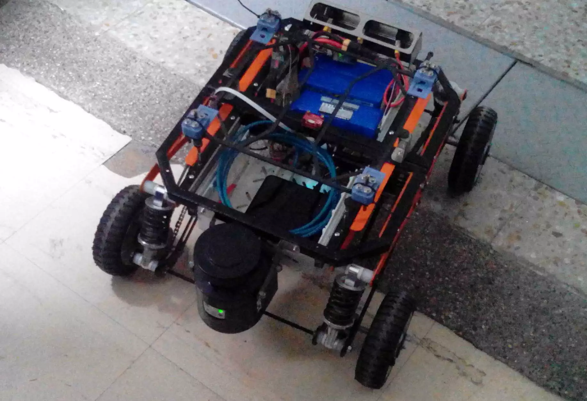

SDV UN
El SDV-UN es un vehículo autónomo que hace parte del LabFabEx en la Universidad Nacional de Colombia. Usa el software ROS para la navegación junto a múltiples sensores que le permiten posicionarse en su entrono de trabajo con gran precisión. Con este aplicativo, puedes conectarte al software ROS de uno de los SDV y controlarlo de forma remota.
Si no sabes como iniciar el SDV, en este enlace puedes encontrar un tutorial detallado de la puesta en marcha del SDV.
Debes acceder al servicio usando un usuario y una contraseña. Estas credenciales son las mismas que usan los SDV.

SDV-UN-3